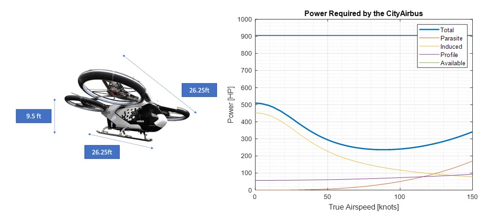
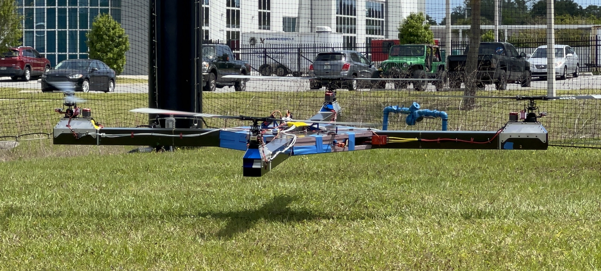
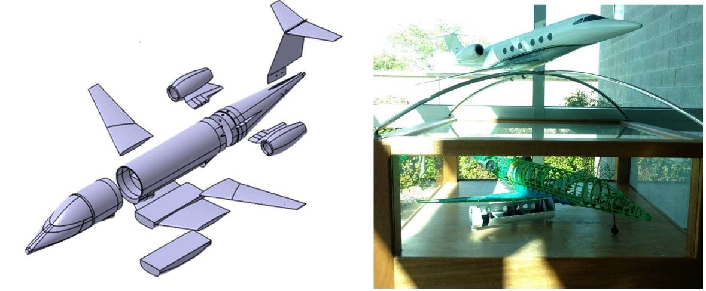
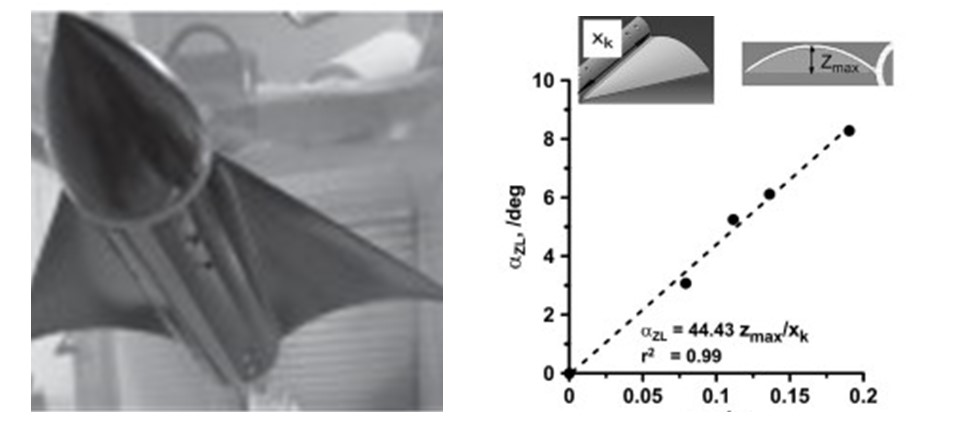
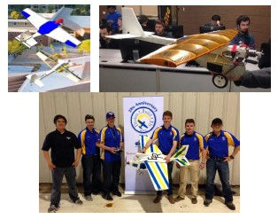
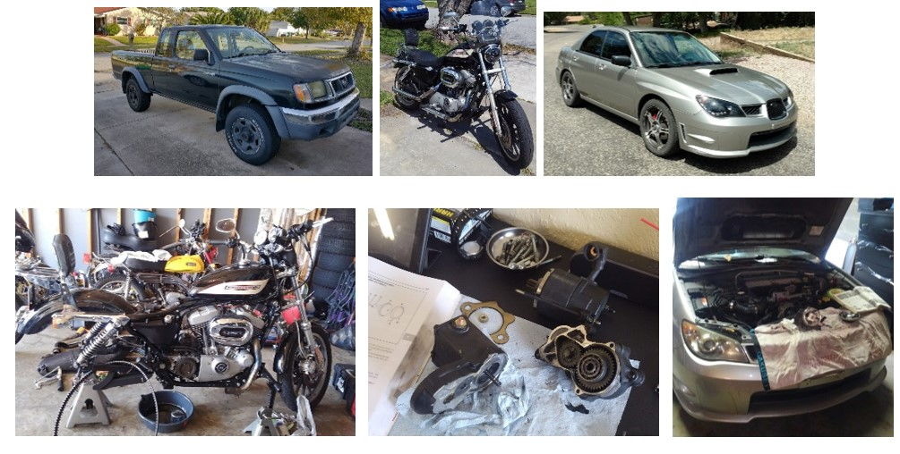
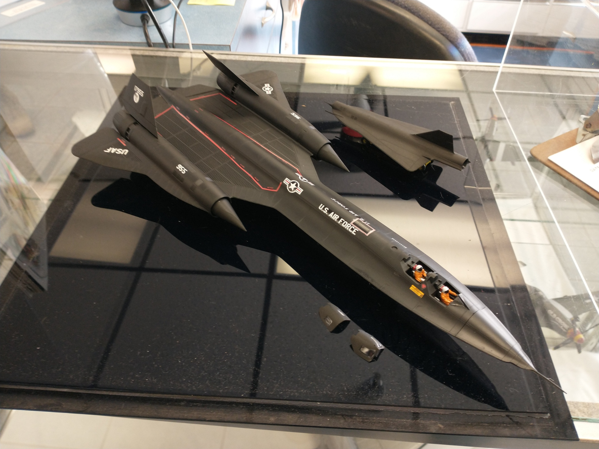
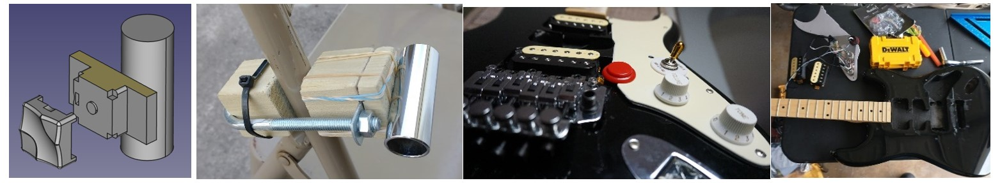

S4 2.1b Composite Parts Manufacturing
Joby Aviation
Marina, California, United States of America
2022-2023
Tasks included Manufacturing Composite Parts and toolings design, rapid prototyping, writing work instructions, manufacturing plan reviews, trouble shootings, non-conformance reports, etc. Utilized CATIA Generative Shape Design & Composite Part Design Workbenches for the design tasks Authored manufacturing work instructions on ION. Established a standard table of contents linked to all engineering models and drawings to navigate efficiently through the instructions for engineers and technicians.
The image below is from an article,
The article features my manager's boss from the time I worked there, and the first half of this article is practically my resume.

Urban Air Mobility/Electric/Hybrid Aircraft Course Project
Embry-Riddle Aeronautical University
Daytona Beach, Florida, United States of America
2022
As the final project of the course, my team presented CityAirbus as our imaginary startup company's new product.
The classmates were also virtural investors, and competed to make more money than others to virtually sell UAMs.
My team/company made more money than other teams as a result.
The selling points were the complete monocoque structure and the redundant propulsion system.
Also, the team's strongest point was that we marketed towards the Walt Disney World as the first customer,
where the new UAM system can replace the monorails, while using the Reedy Creek District as a test ground for the UAM infrastructures. 
"Personal Aerial Vehicle, Embry-Riddle"
Structures and Vibrations Engineer (researcher)
Daytona Beach, Florida, United States of America
2022
The project is funded by the FAA to prepare for incoming era of Urban Aerial Mobility.

Aircraft Assembly
HJ1 Quality Control Inspector
Greensboro, North Carolina, United States of America
2017 - 2020
Assembly process included wing & fuselage mating, fastener torquing, function tests, etc.
Learned how to read blueprint, in return, learned how to design CAD models & CAD generated blueprints better.
I have worked on the HJ1 owned by Maverick himself -- Tom Cruise.
I am very proud to provide him with safety & integrity on my aircraft.
Capstone:
Aircraft Design
AIAA Undergraduate Team Design Competition
Prescott, Arizona, United States of America
2016 - 2017
Designed 6 & 8 passenger intercontinental business jets.Analyzed aircraft performance of historical aircraft in the same category.
Designed, 3D printed, and assembled wind-tunnel model and tested at different configurations.
The wind-tunnel model was later re-painted and displayed as a static model on campus.
Also printed and assembled structural and interior arrangement models. 
Para-wing Aerodynamic Analysis
Using Wind-Tunnel
Prescott, Arizona, United States of America
2016 - 2017
Published "Investigation of a Morphable Parawing for Unmanned Aerial Vehicle Application" (PDF)through the Journal of Aircraft, AIAA with Dr. Lance Traub.
Heavily utilized 3D printing, Wind Tunnel, water table, and AVL 
AIAA DBF competition
CAD Design
and
Drafting team lead
Prescott, Arizona, United States of America
2015 - 2016
Built two aircraft: a small airplane that carries a Gatorade bottle as a payload, and a bigger plane that could carry the other inside.
Placed 12th out of over 140 teams from across the globe.
The flight competition was at Wichita, KS.

Side Projects:
Cars & Motorcycles
2015 - Present
Remove & Replacement: alternator, power steering pump, fuel/brake/oil hoses, various belts, brake pads & rotors, exhaust pipes, etc.
Rebuilt a starter.
Regular maintenance (Engine/transmission/coolant/brake fluid change, tire pressure).

SR71 Aircraft Model
Valiant Air Command
Greensboro, North Carolina & Titusville, Florida United States of America
2018
Built it when I started working for Honda, had it since, but to make the move to CA easier, I decided to donate. Hope to see it displayed. 
Side Projects:
Musicians' Tools & Techs
2020 - Present
Built a wood mockup for sizing and tested its usability.
Hot-Rod Guitar: Hand drill, minor woodwork, painting, wiring, soldering, trouble shooting, wrenching/screwing.
Resistance & continuity tests utilizing a multi-meter.
Dimension/layout/sizing to 1/1000th inches for accurate string tuning.
Click image below for "details"
